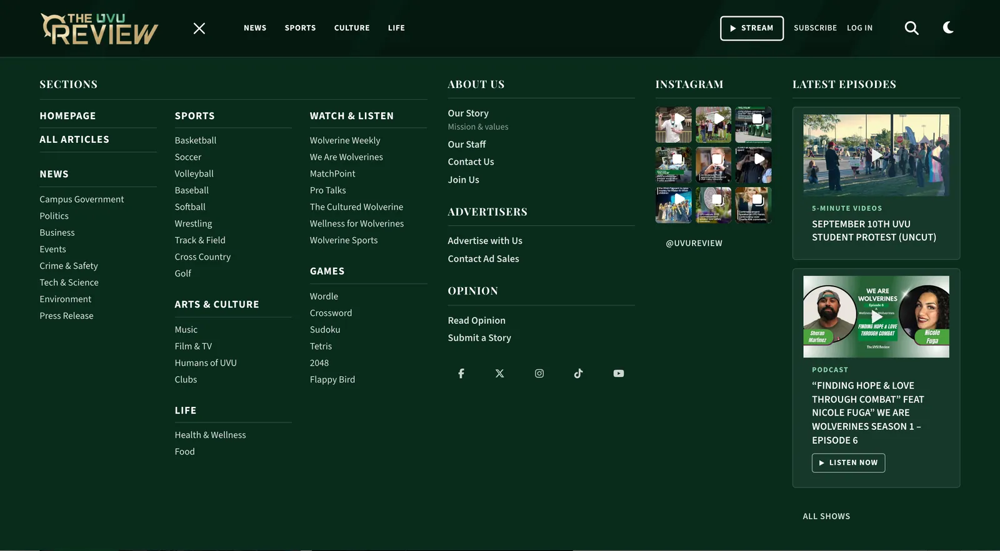
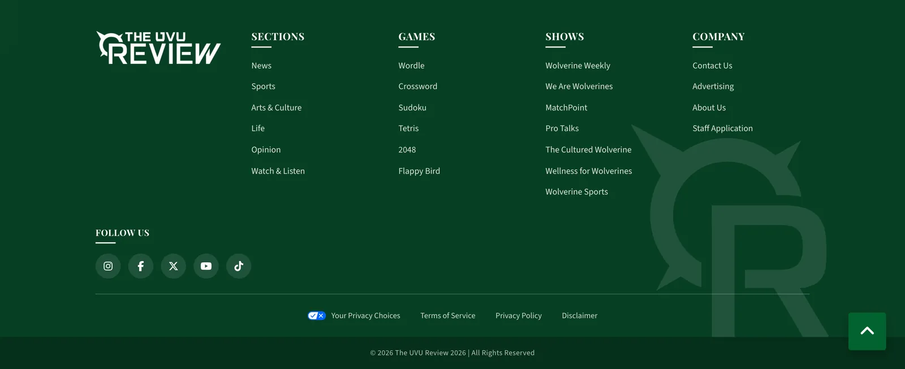
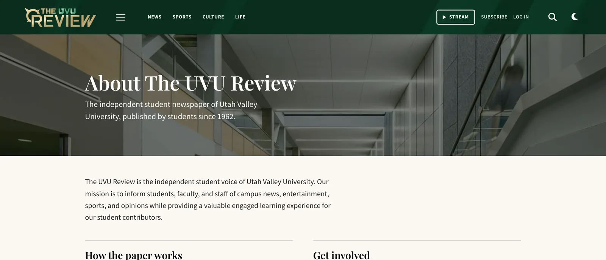

UVU Review website
The UVU Review is the independent student newspaper of Utah Valley University, published by students since 1962. As senior web editor, I'm responsible for uvureview.com: what readers see first, how they find their way around, and how quickly the pages load. These are the changes I made in August and September 2026. All of them are live on the site.
Homepage
The top of the homepage now fills the first screen on a laptop, and the stories in it are chosen automatically. The theme's featured and most-read lists weren't pulling the right stories, so I replaced them with a ranking that weighs how new a story is, how many people have read it, how many comments it has, and which section it's in. I also moved News up so it sits right under the top stories.

Menu
The site had a hover menu on desktop and a separate slide-out drawer on phones. I replaced both with one menu button that works the same at every screen size. It opens a full-width panel with every section, the About and Advertise pages, our Instagram and the latest episodes. I sketched the layout on a whiteboard before building it. Taking out the old second header row also brought the header down from 119 pixels tall to 82.

Footer, logo and type
The footer now uses the same green shard artwork as the header, one step lighter and greener, with the shards kept at the artwork's original 241 degree angle. The header uses the brass-and-green version of the logo.
Headlines are set in Playfair Display and body text in Source Sans 3. Playfair looks lighter than the typeface it replaced, especially at small sizes, so I made the small headlines bolder instead of giving up on the serif.

Speed
Part of every page was code that loaded but was never used. I removed 20.6 KB of inline styles for an author box that never appeared on the page (42% of each page's head), a 98 KB sign-in script, and two image preloads that didn't help. The homepage's HTML went from 364,697 bytes to 340,415, and a typical article from 214,099 to 190,592. Images are now sized for the reader's screen.
Pages and fixes
- I rewrote the About, Advertise, Contact and Work for Us pages in plain language and rebuilt their layouts.
- Articles now end with related stories that share specific tags. When nothing is a good match, the section doesn't show up at all, instead of filling the space with unrelated stories.
- "More by" links for guest writers were sending readers to an article from 2010. They now go to the writer's own page.

How changes go live
The site's theme is maintained by a separate web team, so I don't edit it directly. Each change is a small plugin that loads alongside the theme, which means any one of them can be switched off without touching the theme.